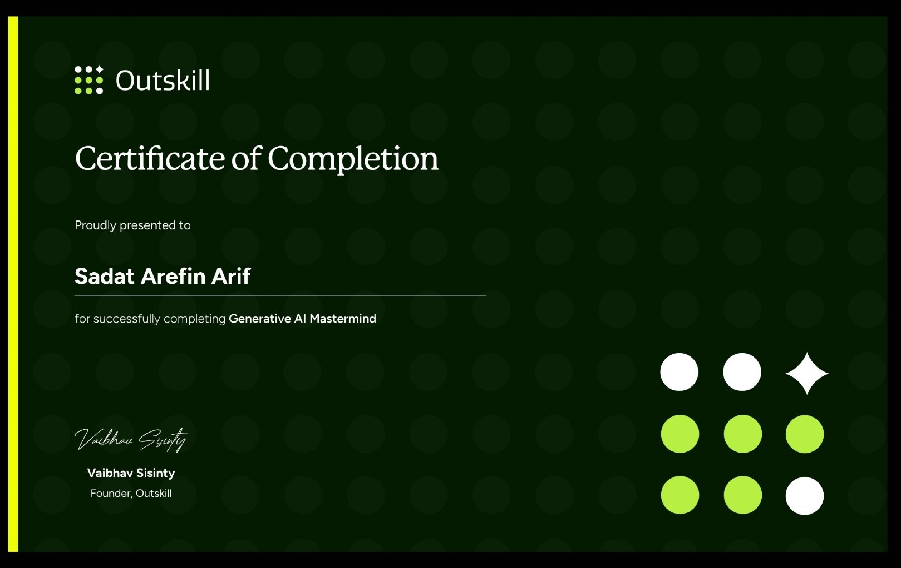

About Me
I’m Sadat Arefin — a graduate in Computer Science and Engineering (CSE) from Rajshahi University of Engineering and Technology(RUET). I have done some hardware & web based projects during my study. Hardware related projects always excites me, I also love GenAI related works. Apart from that I have done Critical thinking and Emotional Intelligence courses which are helpful in better communication.
🎓 Education
Bachelor of Science in Computer Science & Engineering
Rajshahi University of Engineering and Technology — 2017–2023
Focused on Computer Science, Software Development, Machine Learning, and emerging technologies.
Higher Secondary Certificate
Dhaka Residential Model College — 2014–2016
Learned the fundamentals of physics, mathematics, and logical problem-solving.
🔗 Links
🏅 Certificates
Coursera Course Certification: Nand to Tetris

Nand2tetris is a hardware based course in Coursera. Focused on HDL, assembly and python language. Verify at: coursera.org/verify/N2tetris
Coursera Course Certification: Machine Learning Pipelines with Azure ML Studio

Learned to build an end-to-end machine learning pipeline on Azure Machine Learning Studio. Verify at: coursera.org/verify/ML
Outskill Course Certification: Generative AI Mastermind
Learned to build AI agents and skill required to become AI Generalist.